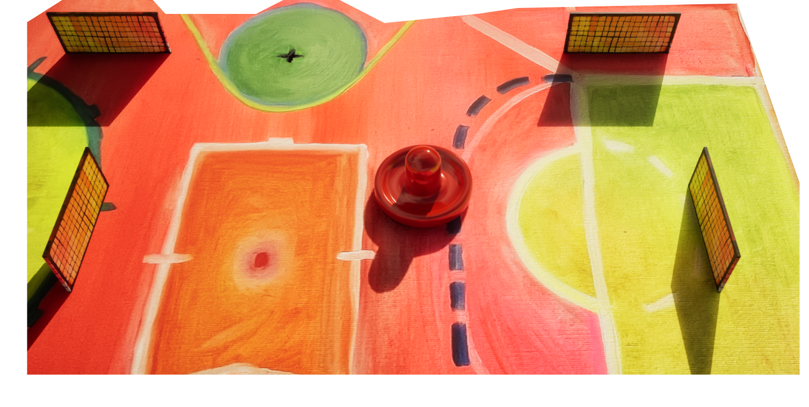
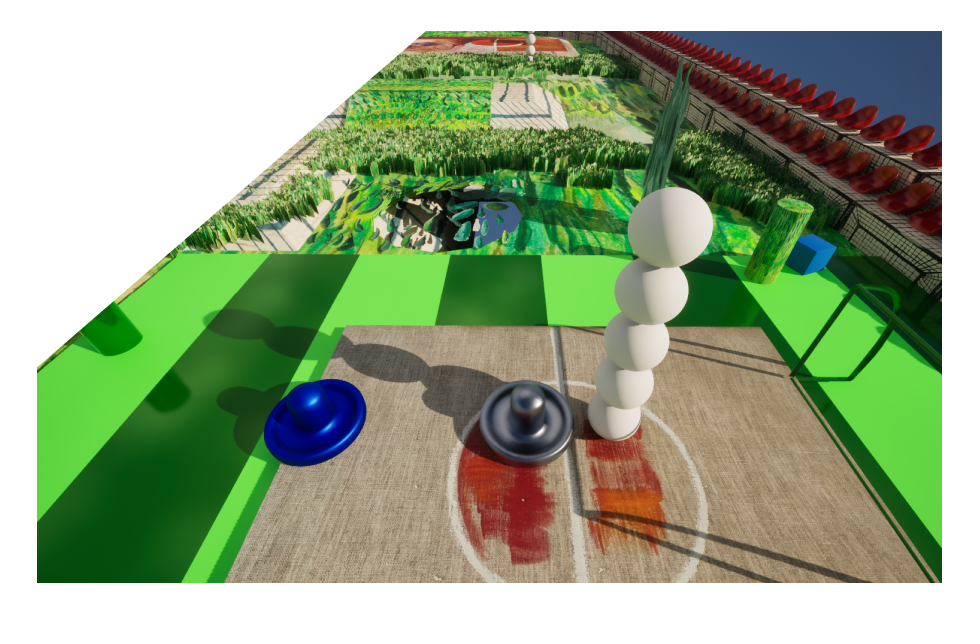
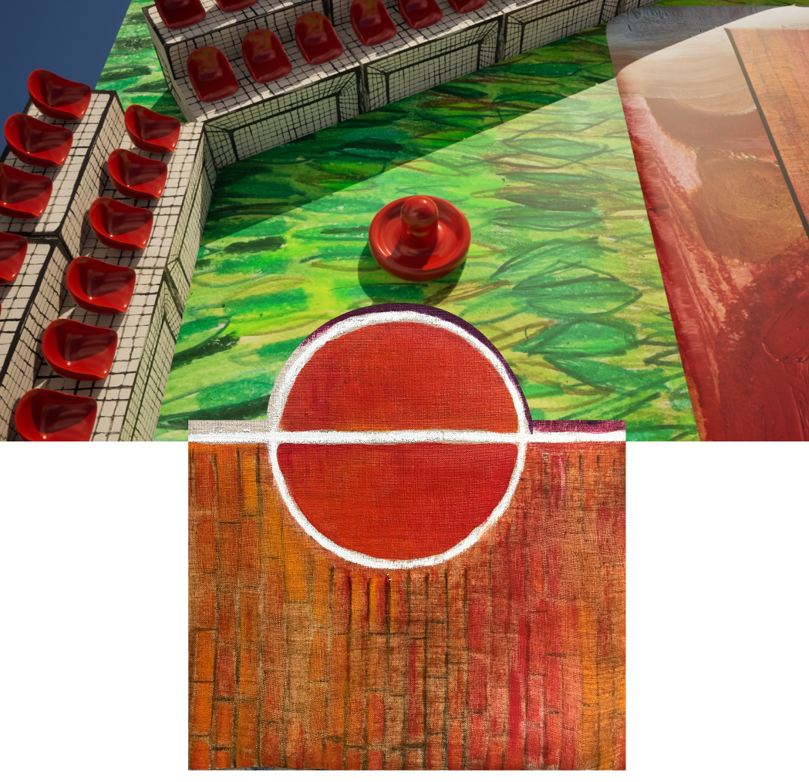

Centered around intuitive, physics-based interactions, players use eye-tracking, or mouse controls to navigate an air hockey paddle in changing fields that fuse elements from various sports like golf, basketball, soccer, ping pong, and foosba, sinking into pools of paint, traversing grassy fields, or descending steeply on skatepark concrete. Each surface offers unique physics and tactile feedback, with mass and gravity creating surprising interactions. Players might experience lightness on one platform and heaviness on another, constantly adapting to the changing environment. Hand-painted elements, scanned in high resolution, create vivid, textured surfaces that contrast with typical digital graphics. Lighting and shading enhance depth, creating a visual experience that shifts from soft and ethereal to bold and striking, resulting in a chaotic but cozy environment. It's a game for everybody and the goal is not to win or lose but to enter a state of flow, emphasizing the joy of movement in a digital environment.
預感
presage / sensation
| Game Element | Description |
|---|---|
| ** SENSORIAL ARENA ** |
______________________ / \ / o o o \ / _____________ \ | | | | | | \ / | | | | -- O -- | | | | / \ | | \ |_____________| / \ o o o / \______________________/ |
| Proprioception | Players interact by tuning into their sense of body awareness in space. |
| You Sound Design | Dynamic, interactive musical soundscape created by you in game object interactions. |
intuitive movement
physics deterioration

Any(body) can play this.
Check out our pictures platform account for extra content!
explore the connection between your physical and digital body
